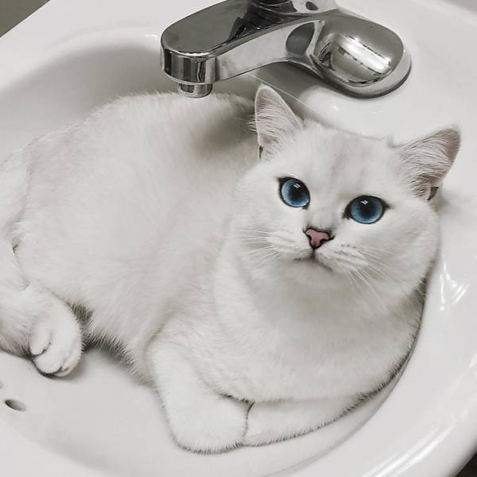

Não ser um gato agitado pode ter um lado positivo, já que seus móveis e objetos ficarão intactos com um British Shorthair em casa. Por outro lado, ele pode dar trabalho, pois precisará ser estimulado constantemente, principalmente para praticar exercícios físicos e evitar a obesidade. Cuidar da alimentação dos gatos dessa raça é fundamental. Portanto, só ofereça alimentos super premium e invista em uma dieta com alimentos úmidos, auxiliando na maior ingestão de água e evitando problemas urinários. A saúde da boca desse pet precisa estar em dia. Não só os cachorros precisam escovar os dentes, mas os gatos também, prevenindo, assim, a formação de placas bacterianas (também conhecidas como “tártaro”) e problemas como a doença periodontal.

Floquinho
Floquinho
O British Shorthair é uma das raças de gato mais populares em toda a Europa, é um companheiro excelente e bastante sociável. Sua origem é incerta, mas acredita-se que os primeiros exemplares surgiram quando os romanos invadiram a Grã-Bretanha, trazendo com eles gatos para combater a população de roedores. A aparência do British Shorthair é única: corpo robusto, cabeça arredondada e membros curtos, fazendo com que qualquer um se apaixone por ele.